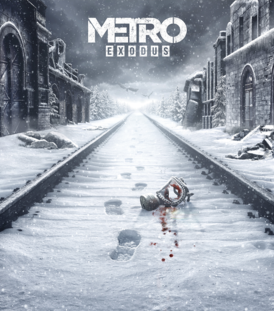

(щоб прейти на сайт назміть на картинки або на назву гри. Щоб повернутися нажміть НАЗАД)
METRO 2033

Рік випустку:2010
За просьбою Хана Артем йде шуката полковник Мeльника проходячи через поля битви Рейха та Красними йде до полковника Мeльника для знаходження Бункера Д6, щоб потім звідта від правити ракети на логово чорних.
За просьбою Хана Артем йде шуката полковник Мeльника проходячи через поля битви Рейха та Красними йде до полковника Мeльника для знаходження Бункера Д6, щоб потім звідта від правити ракети на логово чорних.
METRO last light

Рік випустку:2013
Артем якому сниться кошмар про чорних розуміє яку помилку він зробив коли рахував що чорні є угрозою, Тому він вирішує знайти останього чорного та виправитсь.Вони з Анною дочкою Мельника йдуть до логова чорнрих Артем потрапляє до плену та дізнається про змову про напад на бункер Д6 у якому засіли Спартанці. Вони з іншими Спартанцями відбивалися від нападів Красних,але після того яка вони вїхали в бункер на потязі Мельнику відервало ноги, артем хотів вже підірвати бункер ,але його зупинив чорний який привів своїх братів.
Артем якому сниться кошмар про чорних розуміє яку помилку він зробив коли рахував що чорні є угрозою, Тому він вирішує знайти останього чорного та виправитсь.Вони з Анною дочкою Мельника йдуть до логова чорнрих Артем потрапляє до плену та дізнається про змову про напад на бункер Д6 у якому засіли Спартанці.
METRO Exodus
Рік випустку:2019
Артем разом з Анною виходять на поверхность та їх везуть Ганзавци щоб вбити бо ті зустріли пришедших. Артем бачить поїзди який прийшов в депо в цьому депо він зустрічає Єрмака який йому дає ніж та вчить гравця стелсу. Артем та Анна ломають глушилку та дізнаються про життя за Москвою, але вони навіть розігнатися не встигають як їх зустрічає флешка. Але Мельник допомагає виїхати з Москви та вони відправляються в Емантау - правительський бункер. Вони потрапляють к логову царь-риби який покланяються містні сектанти Артем зустричає рибу та вона хоче його зїсти. Потім він зустрів креста - механика якого хотіли вбити сектанти бо він механик а вони рахують що современиє технології й привели до ядерної зими. Герої приїджають до Емантау де їх чекають людоєди яких вони вбиваютьта їдуть звідси. На пути герої зустрічають пустелю де в них закінцюється вода та топливо. Вони поповняють запаси силою та їдуть звідта. Анні стає поганіше бо у сектантов вона впала та надихалася токсинами які розїдають її легені повітря з чистої тереторії не допомагають. Та вони їдуть в НІЇ де по разказам Єкатерини роботола її мати та де розробили дуже добрі ліки. Мельник та Артем ідуть туди щоб забрати ліки Мельник та Артем розділяються Мельник їде за картами тереторій ісля взриву, а Артем їде за ліками.Артем знаходить їх але Мельник помирає від радіації.
Артем разом з Анною виходять на поверхность та їх везуть Ганзавци щоб вбити бо ті зустріли пришедших. Артем бачить поїзди який прийшов в депо в цьому депо він зустрічає Єрмака який йому дає ніж та вчить гравця стелсу. Артем та Анна ломають глушилку та дізнаються про життя за Москвою,Але Мельник допомагає виїхати з Москви та вони відправляються в Емантау - правительський бункер. Герої приїджають до Емантау де їх чекають людоєди яких вони вбиваютьта їдуть звідси. На пути герої зустрічають пустелю де в них закінцюється вода та топливо. Вони поповняють запаси силою та їдуть звідта. Анні стає поганіше бо у сектантов вона впала та надихалася токсинами які розїдають її легені повітря з чистої тереторії не допомагають. Мельник та Артем розділяються Мельник їде за картами тереторій після взриву, а Артем їде за ліками.Артем знаходить їх але Мельник помирає від радіації.